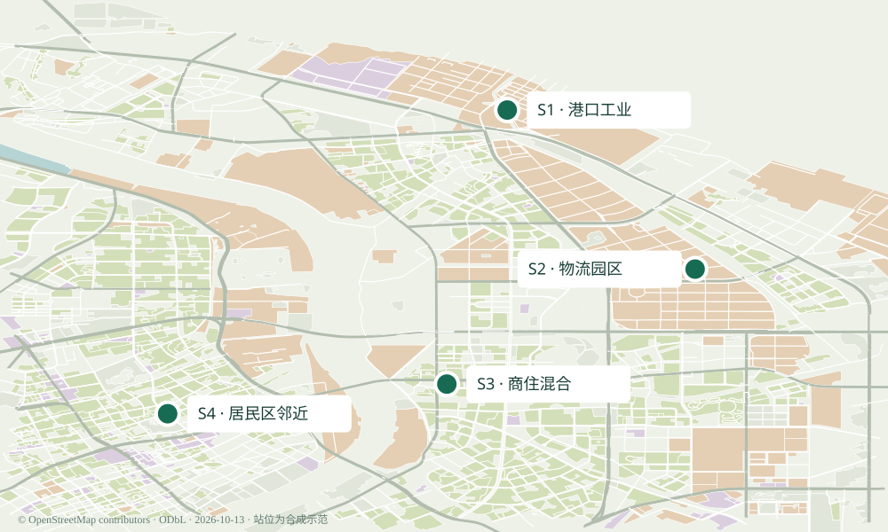

SHANGHAI / ENERGY & MOBILITY
一座充电站，与它的电网。
开始讲解 →
分享当前画面
查看分级依据 ↗
背景
夏季 · 正常代表周
冬季 · 背景偏高代表周
方案
常规充电
有序充电
有序＋无功补偿
有序＋谐波滤波
无新增重卡
区域总览
精细场站
供电影响
减少动态
01 / 区域总览
运输需求，连接四个站点。
公开道路与功能分区 · 场站与工程参数为合成示范
上一步
下一步 →
继续讲解
退出
⌂ 全景
俯视
斜视
跟随车辆
＋
−
正在准备三维场景…

二维浏览模式
开启三维场景
打开可缩放地图 ↗
© OpenStreetMap contributors / ODbL · 场站内部布局与建筑高度为示意
▶ 播放
↺ 从头重放
1×
4×
12×
—
读数：15分钟计算点 · 动画：示意插值